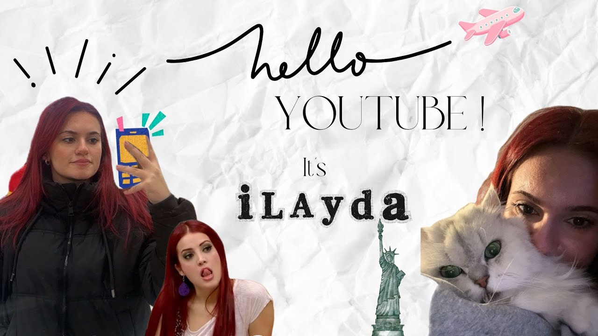
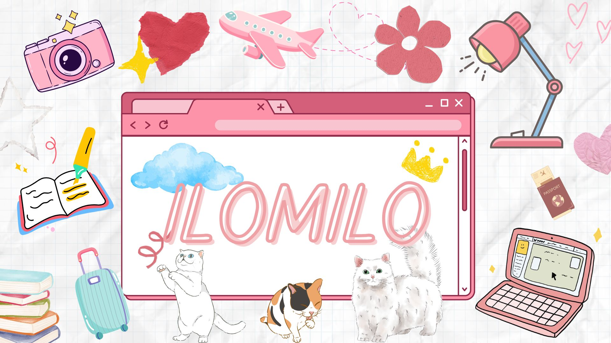
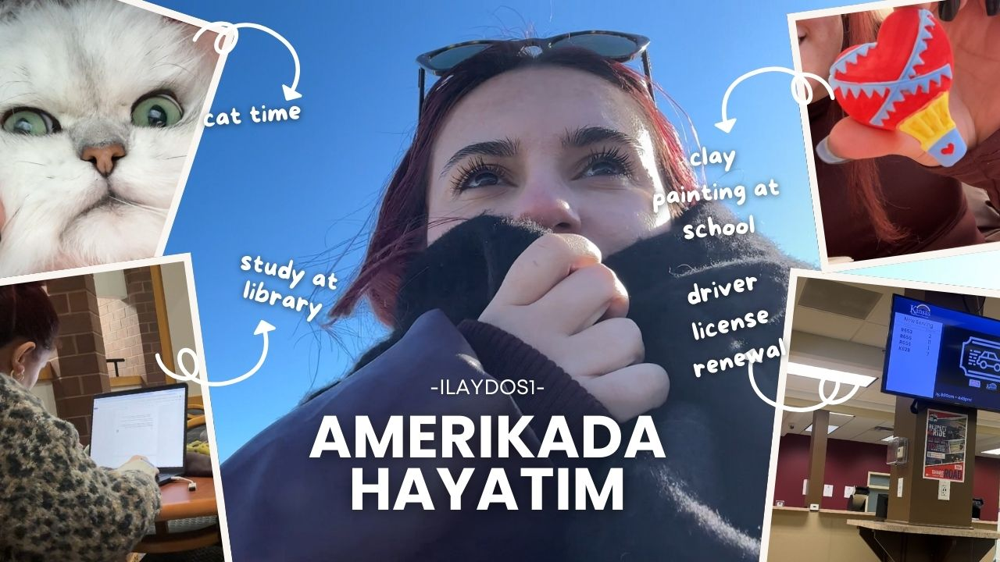

My Portfolio
In this portfolio, I wanted to share my YouTube videos. Since I am still a student, I dont yet have completed projects in the field of Computer Science. That is why I chose to highlight the creative work I have done so far through my videos. So far, I have created and published three YouTube videos, each of which reflects a different side of my interests and creativity.
Video 1: Hello YouTube! It is iLayda
Date Published: February 20, 2025
This was my very first YouTube video, recorded during my last week before school started in the U.S. I introduced myself and shared a little bit about my personality and interests. It was the beginning of my content creation journey.
Watch on YouTubeVideo 2: 3 School Days Vlog with Me
Date Published: February 23, 2025
This vlog captures three of my school days in the U.S., including library study sessions, classes, and little daily moments. It's a warm and casual video reflecting student life and a bit of aesthetic storytelling.
Watch on YouTubeVideo 3: My Life in the U.S.
Date Published: March 9, 2025
This video is a creative vlog about different moments from my life in America from studying at the library and renewing my driver’s license to painting at school and spending time with my lovely cat. It’s one of my favorite videos so far.
Watch on YouTube